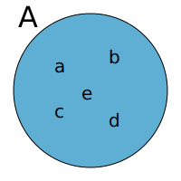

Em Matemátemática, utilizamos sistemas axiomáticos. Nesses sistemas, temos algumas noções elementares, que são coisas que não definimos e axiomas, que são as regras que escolhemos como válidas dentro desse sistema.
Na Teoria dos Conjuntos, as noções elementares são:
Nossa noção de conjunto em matemática é a mesma da linguagem coloquial: um agrupamento de coisas. Essas coisas que compõe o conjunto são os elementos desse conjunto. Quando um elemento faz parte de um conjunto, dizemos que ele pertence ao conjunto.
Exemplos
Quando queremos dizer que um elemento pertence a um conjunto, utilizamos o símbolo $\in$. Quando queremos dizer que um elemento não pertence a um conjunto, utilizamos $\notin$. Assim, $$a\in \text{conjunto das vogais}$$ $$c \notin \text{conjunto das vogais}$$ $$0\in \text{conjunto dos números pares}$$ $$1\notin \text{conjunto dos números pares}$$
Uma convenção é um acordo. A convenção geral é que utilizamos letras minúsculas para denotar os elementos e letras maiúsculas para denotar os conjuntos.
Podemos definir um conjunto de duas maneiras:
Exemplo
Existe um conjunto que não possui nenhum elemento. Esse conjunto é chamado de conjunto vazio, e denotado pelo símbolo $\emptyset$.
Um conjunto unitário é um conjunto que possui apenas um elemento.
Exemplo: o conjunto de tutores de matemática do PIAPE no campus Blumenau possui um único elemento.
Quando estamos trabalhando em um problema, geralmente consideramos um conjunto universo, que é o conjunto de todos os elementos que podemos considerar no contexto estudado.
Dizemos que um conjunto $A$ é _subconjunto de $B$ se todo elemento de $A$ também pertence a $B$. Nesse caso, utilizamos a notação $A \subseteq B$.
Exemplo
Contra-exemplos
Podemos representar conjuntos de maneira visual. Para isso, utilizamos diagramas de Venn.
Podemos representar o conjunto $A = {a,b,c,d,e}$ listando seus elementos e agrupando eles dentro de um círculo, como abaixo

Se quisermos representar o conjunto $A = {a,b,c}$ juntamente com o conjunto $B = {a,b,c,d,e}$, podemos representar todos os elementos e depois circular os que pertencem a $A$ e os que pertencem a $B$.
Agora temos uma maneira visual de entender que $A\subseteq B$.
Se quisermos representar o conjunto $A = {a,e,i,o,u}$ juntamente com o conjunto $B = {a,b,c,d,e}$, podemos representar todos os elementos e depois circular os que pertencem a $A$ e os que pertencem a $B$.